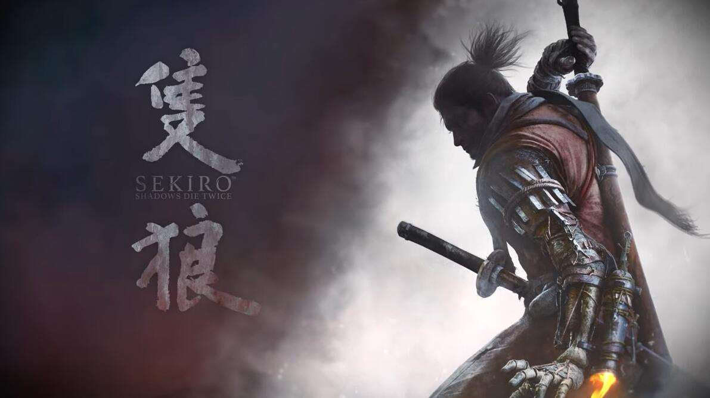

"Sekiro: Shadows Die Twice" is a third-person action-adventure sandbox game developed by From Software, in which the player will control a ninja and save his master---with A mighty prince of Japanese aristocratic blood, and avenged his natural enemies. The game was released globally on March 22, 2019, and supports the Chinese version.
The game's plot will explore the brutal Japanese Warring States period in the late 16th century, where life and death conflicts continued. In the dark and twisted world, players face off against life-threatening enemies, use prosthetic hands to equip various deadly weapons, show off their ninja skills, sneak, shuttle up and down in bloody confrontations, and confront the enemy head-on.
On December 13, 2019, "Sekiro: Shadows Die Twice" won the TGA 2019 Best Game of the Year. Japan, the ancient Warring States period. In front of a snow-covered mountain, there is a country called Reedna. Weiming Yixin, known as the "Juggernaut", usurped power and established the Weiming Kingdom. He is the hero of the Northern Kingdom. However, the country of Ashina is now in a crisis of survival. Isshin's grandson, Ashina's general, secretly summoned his own army in the predicament. "This is the end, in order to protect Ashina, we have no choice", "Now, we need that prince." In this way, the prince began to be arrested and imprisoned alone, with no family, no retainers, and nothing. Except for one ninja. This is the story of a helpless and lonely master and servant.
